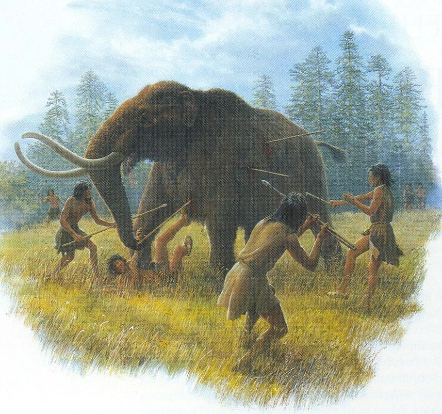

In terms of the Mastodon's connection to early humans, it has been long believed that the Mastodon was hunted to extinction by early humans. Prime example of a group of people that hunted down Mastodons were the Clovis people. This idea that the Mastodon was hunted to extinction has even facilitated the idea that the Clovis people were big game hunters.
We knew that early humans hunted down big game animals like the Mastodon thanks to these primitive tools pictured to the left. These are "Clovis Points" and they were found near the fossilized remains of big game animals. Since these Clovis Points have a groove near the bottom of the tool, it has been concluded that these points were placed on the ends of sticks, creating spears. From there, it has been deduced that early humans like the Clovis threw and/or jabbed spears into these huge animals, then after they killed and butchered the animal, they leave the points behind. These points then get preserved and fossilized alongside the animals' remains.
 However, the idea that the Clovis people were big game hunters have been contested in recent years. Since the Clovis Points were multipurpose tools, the idea that they were used as points on a spear can not be determined with one hundred percent certainty. It is totally possible that the points were used as a butchering tool for cutting meat off of the bone. In addition, the Clovis people only ate what was easiest to get, so the idea that they specifically sought after big game animals like the Mastodon is a stretch.